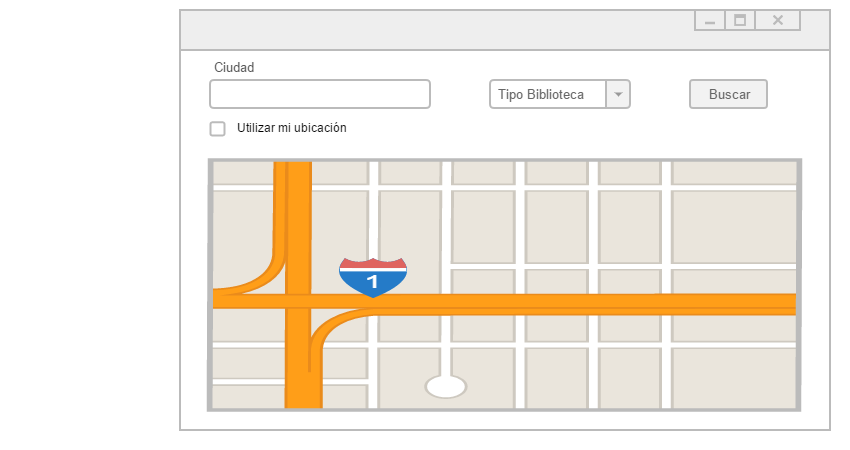

La aplicación permitirá a los usuarios localizar las bibliotecas más cercanas y encontrar aquellas especializadas
en ámbitos universitarios.
Además podrá encontrar las actividades culturales que se realizan en estas en un período
de 60 días desde el día actual, estas se indicarán
en el propio marcador de la biblioteca donde se realice. Y podrán
localizar aquellas bibliotecas móviles que se encuentren por la zona.
